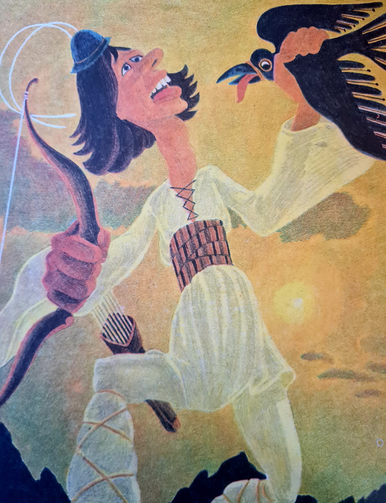

Mergând, mergând și iar mergând le iese în cale o “altă bazdaganie”, care alerga după păsări, cu arcul să le vâneze. De multe ori “se lățea așa de tare, de cuprindea Pământul în brațe”. Se întindea așa de mult, că ajungea cu mâna la Lună, la stele, la Soare. Putea prinde păsările cu mâna și le mânca cu pene cu tot. Mirat, Harap Alb se întreba cine mai e și ăsta. Toți au fost de părere că numele lui poate fi Păsări-Lăți-Lungilă. După ce se lăudă că trebuie să fie cu ei, plecară toți mai departe…
Putem spune că numele acestuia se trage din mitologia românescă, e asemănător unui uriaș vânjos, voinic, înalt, cu pasul mare, cu capul cât o baniță. Se spune că ei pot sta de vorbă de la un munte la altul.
